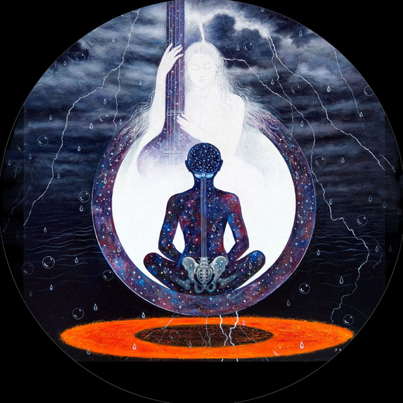
Awareness & Perseverance
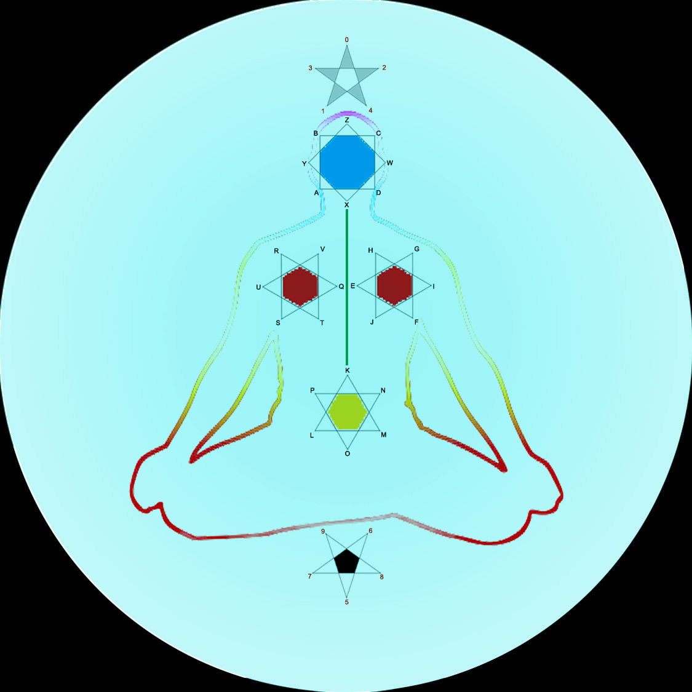
Cosmic life cycle
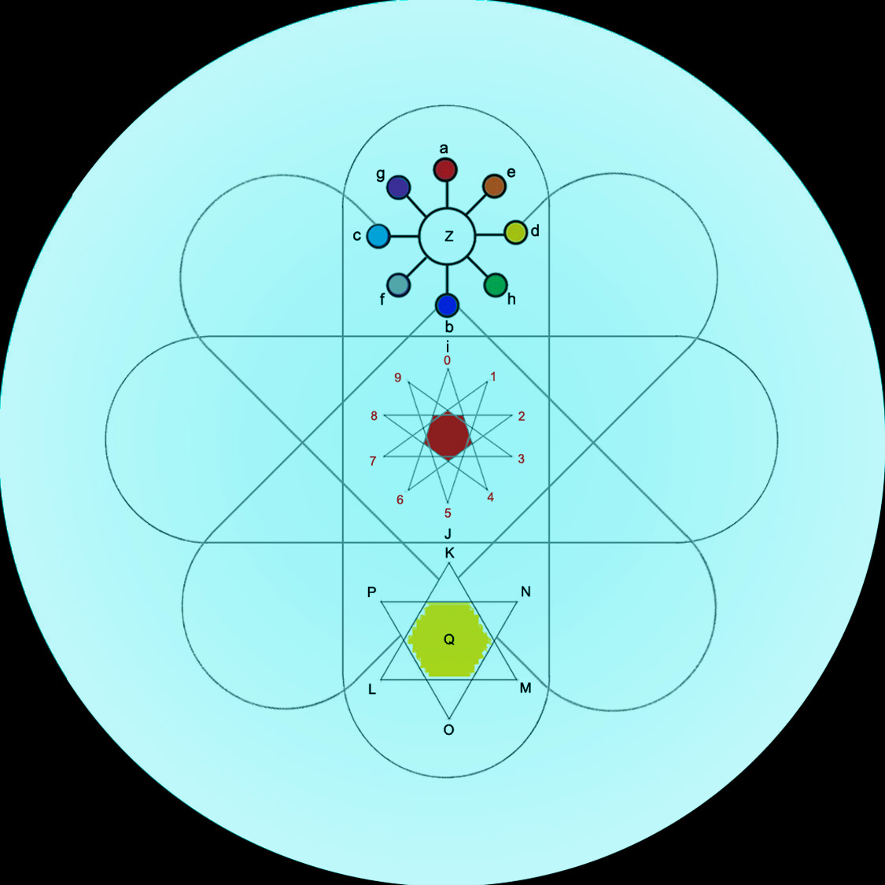
Atomic life cycle
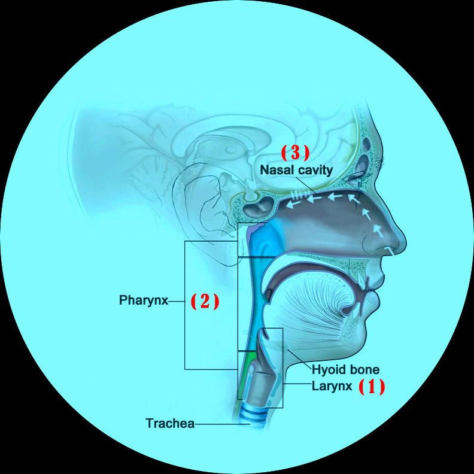
Three-stage of breathing
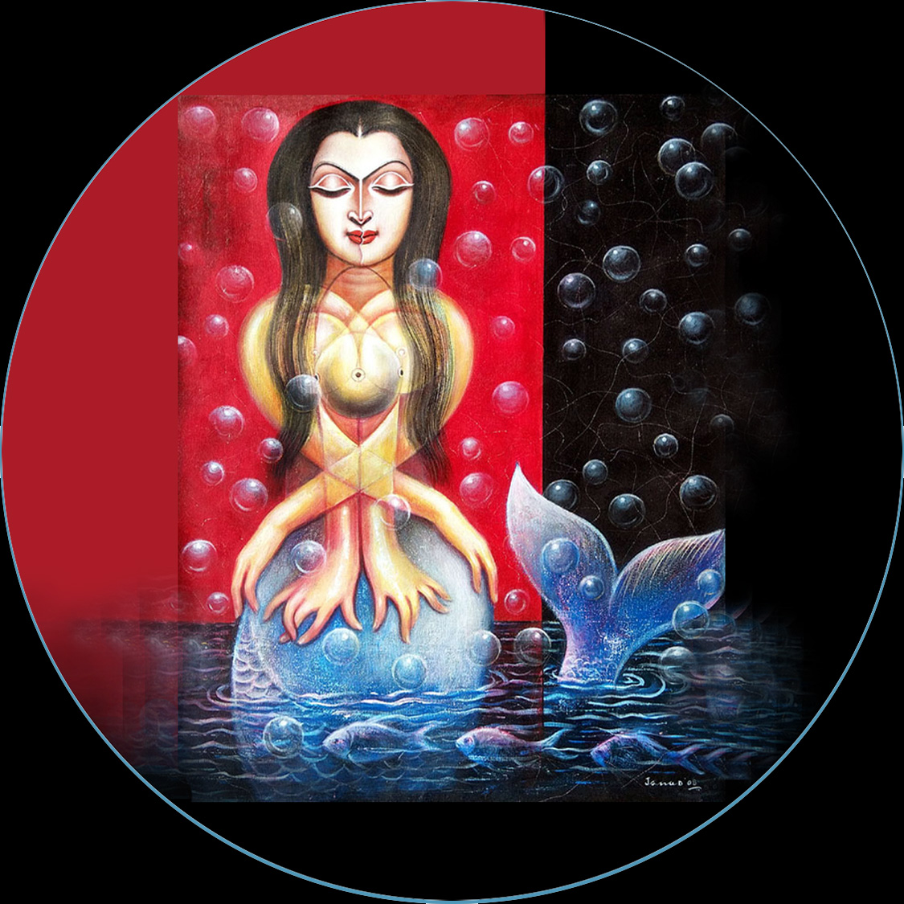
seed becomes a seed-tree — the rebirth of creation, absolute, ever immersed in growth, infinite life-cycle;
clarity of carbon diamonds — result of inner journey, darkest life of womb, self-expression in unconscious;
union of body & mind — resurrection of life source, conscious breathing, natural & spiritual connection;
resonance in brain neurons — echo of heartbeat, attention to resonance, resurrection of vitality;
a point in solar universe — space-time metaphor, zero-hour's life reflects the void, Universe eternal;
Quism, The Infinite Flow to Wholeness and Self-Realization:
The Secret of Quism: The Cosmic Union of Body and Soul — "The Secret of Quism" explains life as a harmonious union between a sophisticated biological machine and spiritual practice—where the body serves as the guide for both the conscious and the unconscious;
The Essence of the Biological Machine — The body is compared to a garland, where the flowers represent the body-cells and the thread the nervous system; the thread of life resonates with the brain's neurons, uniting the self with the Supreme Power immersed in creation;
The Spectrum of Consciousness and Revelation of the Unconscious — Through the harmony of body & mind, through yogic & meditative activities, the spectrum of consciousness unfolds and the unconscious reveals itself; it is akin to preparing the soil before planting a seed; it aligns human existence with the eternal rhythms of nature, allowing the "Ganges of Life" to flow eternally from the depths of the soul;
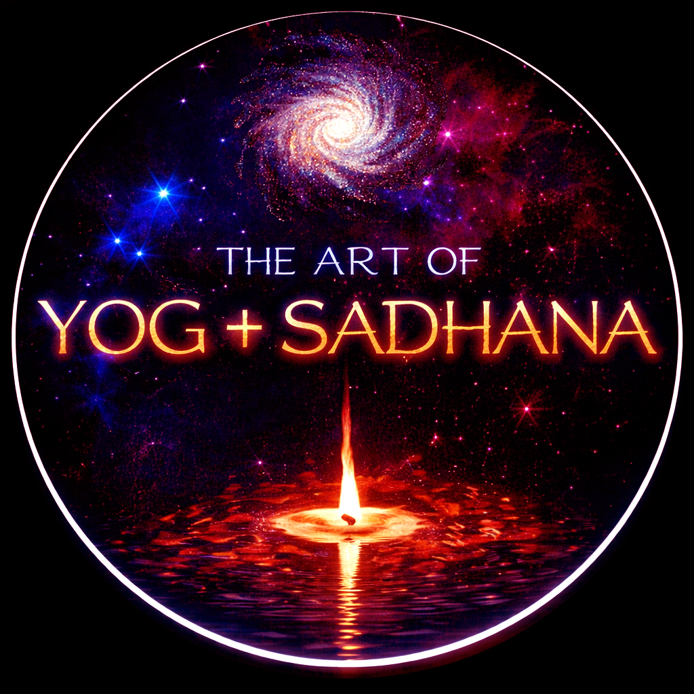
The Art of Yog+Sadhana: A Unified Practical Guide — This one-hour practice is performed by sitting in a meditation posture only once;
1) Tuning the Nervous System (Spinal Alignment) — This practice is fundamentally a process of mobilizing the body through a mathematical rhythm (analogous to − + × ÷);
The Practice: The spine is rhythmically bent left-to-right, forward-to-backward, and laterally; in the fourth exercise, the head and spine are rhythmically swayed left and right together, much like a snake gliding forward; each practice is performed 60 times;
The Rotation: Following this, ÷ dot reflection, rotate the head in a circular motion: clockwise, counter-clockwise, and clockwise again (20 x 3 = 60 times);
The Sound: Chant the humming sound with your mouth closed, just like the buzzing of bees, throughout the entire process from beginning to end; this strengthens the vital connection between the brain and the spinal cord;
2) Breathing for Vitality (Oxygenation) — This exercise is designed based on the natural rhythm of blood pressure (80/120); balanced blood pressure maintains the harmony between the body and the mind;
The Technique: Inhale slowly through the nose and respiratory tract, then exhale rapidly (simulating the 80/120 flow of blood pressure);
Breath Retention: After 10 such breaths, close the nostrils with your hand and hold the breath for as long as possible; similarly, after taking another 10 breaths, exhale completely and keep your nostrils closed to 'remain in a breathless state' for as long as possible; perform each cycle 5 times;
The Result: This process awakens the brain's neurons and elevates the dreams of the unconscious to a new height;
3) Reflective Meditation (Zero Hour: 0–9 Months) — This stage reflects the primal struggle of an embryo within the womb: transitioning from breathlessness to the first deep breath—establishing a "newborn" life and integrating the inner being with the life-waves of nature;
The Technique: The practice is performed in alternating breathing phases; after taking 2–3 deep breaths, remain still with condensed breath (holding the breath in); then, after another 2–3 deep breaths, exhale completely—experiencing a "suffocating" silence; this initiates the descent of self-realization into cosmic consciousness;
Mindful Breathlessness: A silent, breathless existence; the goal is to remain steady in a state of breathlessness (even after deep inhalation or exhalation) and to feel the heartbeat through the resonance of brain neurons; this reflects the resurrection of body-cells and the attainment of cosmic stability;
The Connection: Bridging the Self and the Cosmic Wave — The "Zero Hour" functions as the ultimate bridge in this journey; just as a seed transforms into a seed-tree, human life also unfolds through solitude and meditation; in nature, storms and rain signify the transformation of energy; likewise, the heartbeat and the creative mind express the universal life-wave immersed in the continuous flow of existence;
Conclusion of the Practice — The entire session is a one-hour practice performed in the same seated posture; in this state, the life cycle merges with the evolution of creation, just as life itself follows the cycles and rhythms of nature; this process guides the practitioner toward a state of cosmic supremacy;





Creation & Recreation: The Genesis of Cosmic Consciousness — The beginning of creation is organized in space, where the water cycle of evaporation and the appearance of life serve as the foundation of existence; this life cycle is animated by the tides of gravitational force and the celestial wandering of the Moon; the full moon, new moon, and eclipses enrich the world of dreams and imagination; in this vastness, the solar system is but a point in the universe—a reflection of gravitational forces in space;
The Ultimate Evolution of the Solar-Cosmic: A Living Map — The human body unfolds as a solar–cosmic passage, where the skeletal form of consciousness reveals the final transparency of the life cycle—birth, growth, and dissolution breathing within one continuous arc; the fleeting layers of existence—numbers, letters, books, and symbols—drift like traces of memory, carrying human knowledge and cultural inheritance; as consciousness is refined, neural pathways resonate with the cosmos, and the body becomes a living constellation where time, light, and awareness converge; in this luminous state, humanity abides in perpetual becoming; though the universe moves without rest, life remains a quiet constant—an immutable flame within ceaseless motion;
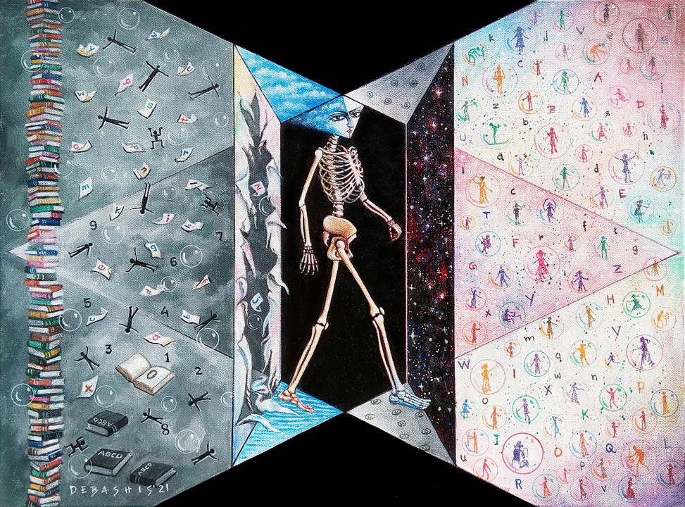
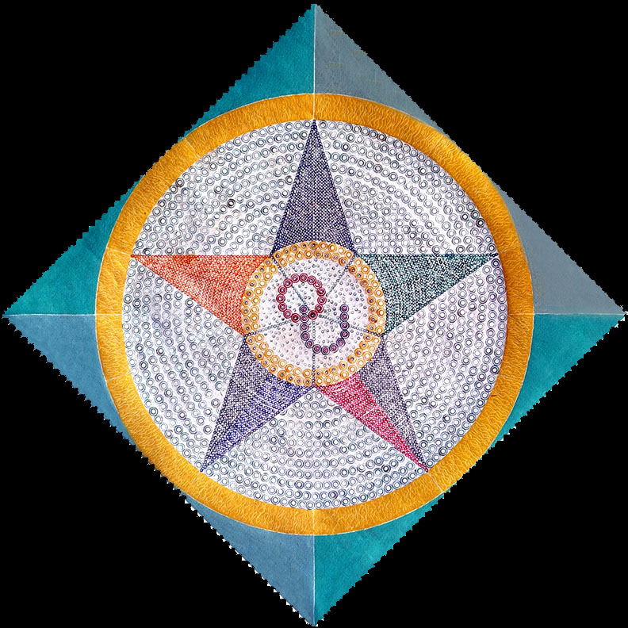
real-ism
:: Q U I S M ::
life as reflection of nature
eternal life, nature's cyclical memory
quism connects the first emergence of life
where birth and death dissolve into continuity
carbon transforms into diamond the inner journey refined into clarity
birth arises from elements and senses new life shaped within compromise
reincarnation, attention to heartbeat energy & vitality reorganized
breath stills, life resonates brain neurons echo the heartbeat
seed unfolds into a tree, the tree returns as banyan-tree
natural life exists in its unfolding state
life acts as mediator
life in zeroness
(xy = z)
(0-9)
(0)
i
(8)
(born)
life complete in zero
eight as reflection of zero
a return into one's own life
self-realization through light, heat, sound
alphabet mirrors life 26 → 2+6 = 8 → reflection of 0
realfrom 0 to 8 opposites merge into one form
carbon becomes diamond vitality animates matter
the body as archive of origin life on earth, toward self-realization
digits and letters converge art and culture as research of consciousness
natural form of art & culture evolve in nature's cycle
A B C D
E F G H I J K L M
Z Y X W
V U T S R Q P O N
ABCD = WXYZ, source of reflective millennium cycle
A B C D
END OF THE BEGINNING
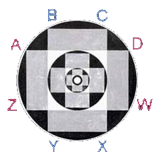
BEGINNING OF THE END
Z Y X W
ABCD = WXYZ : BC & AD with WZ & XY
WZ, is Word Zero, figures from zero to nine i.e. gestation period' and 'XY' is embryo, life source
xyx, which produces chromosomes
xyz, the esult of alpha and omega
birth is the result of life and nature
quism connects to the beginning of life on earth that represents the seed information of the art of quism
the seeds are G = C(Q), x + y = z, ABCD = WXYZ, QRSTU = VWXYZ, a = z²
G = C(Q)
G = C whole queue
G = C (QRSTU)
G = C (QU)
G = C (Q)
G = C(Q): gestation signifies an eternal three-dimensional life cycle—creation, stability, transformation
(Q) represents origin: QRSTU → QU → Q, generation, parenthood, and birth
life unfolds from Earth's first emergence toward self-realization
realx + y = z
x + y = z: the convergence of parental sources at the Zero Hour, where origin and completion meet
XX / XY symbolize chromosomal emergence of sentient form
XYZ represents the integrative reflection of gestation
ABCD = WXYZ
ABCD = WXYZ: a reflective millennial cycle—beginning and ending mirror one another
from A–M to N–Z, 13 + 13 = 26 → 2 + 6 = 8, reflection of 0 (zero hour → 0-9)
the reflective form of zero, continuity, and the 0–9 / 19–20th-century cycle
QRSTU = VWXYZ
QRSTU = VWXYZ: the light and heat reflected within the life cycle
Q as origin, Z as gestation's Zero Hour—self-realization's seeds
Q & Z express reflective symmetry
a = z²
a = z², alpha emerges from zero, alphabet as solar order—
an eternal cycle of nature, culture, and consciousness
creation returns to its source, eternal nature cycle
A-Z reflection of zero (0-9)
the art of quism concept as reflection of zeroness
alphabetical evolution mirrors physical growth—
A B C D E F G H I J K L M N O P Q & Z
18 characters, reflecting skeletal development and puberty
life-existence appears as energy and vitality
A B C D E F G H I
Z Q P O N M L K J
L
I
G
H
T
E
N
M
E
N
T
a seed is reflected in its fullness within the cycle of nature, the seed-pattern already exists within the seed—life unfolds through this internal design
! . . . . ! (everything is either true or false) ! . . . . !
! . . . . . . . . ! (the body remains fixed in eternity) ! . . . . . . . . !
! . . . . . ! (the life is continuously processed) ! . . . . . !
! . . . ! (self-realization emerges as a visible trace of life's passage from origin to form) ! . . .!
. ! . ! . ! . ! . ! . ! . ! . ! . (carbon becomes diamond through a singular inner journey) . ! . ! . ! . ! . ! . ! . ! . ! .
all beings are absolute by birth; parental sources remain undivided, serving psychological and spiritual evolution equally
awareness express the unconscious, and body–mind conflict reflects nature's cycles in reflective yogic meditation
the life-seed completes the Zero Hour—fullness arises through perseverance and solitude
heartbeat resonates with brain-neurons, an echo of silent sound within consciousness
gestation is universal, nature's laws are one—self-realization becomes equal for all
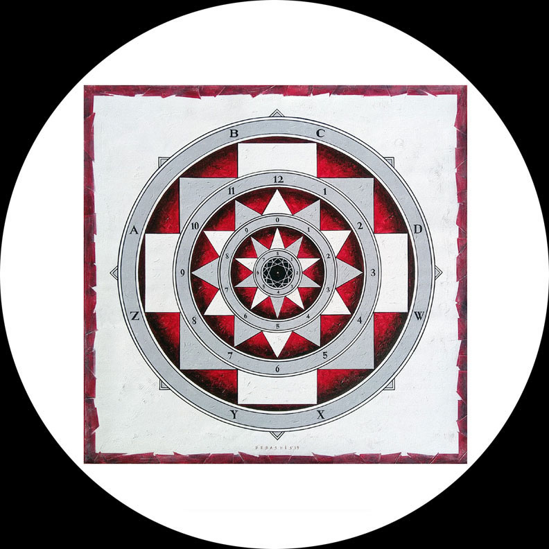
natural life cycle: artistic & cultural perspectives
body-mind lifestyle, continuous — attention to the heartbeat
dynamic life within the stability of touchstones
zero hour evolution exist worldwide
creation as a reflection of zeroness
water energy food
0
z e r o
0
0-9
0
0 + 0
8
.
C
O
N
S
C
I
O
U
U N C O N S C I O U S
! ! ! ! ! ! ! ! ! ! ! ! ! ! ! ! ! ! ! !
.
.
. . . . .
.
.
the self-realization of the artist unfolds through the artwork, guided by the natural law;
as an artist exploring life and nature, creation emerges from the womb of nature itself—just as the Ganges arises from the womb of the Himalayas, sustaining the world through storm and rain cycles; this is a dimension of nature's rhythm that renders life vivid and dynamic, while the Zero Hour of gestation remains eternal; heartbeats, radiant like the sun, affirm that life and nature are continuously evolving, expressive, and alive;
within nature—and within emptiness—life persists as an eternal life-wave, resonating through the echo of the heartbeat; in the stillness of breathing, body-cells prepare for their ultimate destination; in parallel, technological forms shaped from natural resources mirror this clarity, marking humanity's passage from mechanical existence toward conscious freedom—where birth itself first appears as liberation;
stability of self-realization arises through reflective yogic meditation, where transformation of the womb reveals life as a reflection of body-mind;
nothingness becomes wisdom—becoming a guide to real life
life returns to its original source: a successful landing
the unconscious expresses itself through patience
rhythmic life & nature flow through evaporation
buddhahood-emerges as pursuit of infinite life
renewal unfolds through lived experience
individuality awakens in self-identity
life full of spiritual-enlightenment
buddhahood: reality of wisdom
0
the "secrets of quism" page is presented as a symbolic tree form, where luminous alphabetic letters emerge against a dark ground, signifying renewal of life; the transformation from carbon to diamond—understood as the illumination of the dark world—parallels the birth of a child from the womb, affirming creation as an absolute process within nature; here, life is revealed as a reflection of vital force, while the continual reformation of the life-source gestures toward the presence of a supreme, underlying order;
the composition unfolds as a sequence of states: the beginning of life through rain cycles; renewal through steady breathing; recreation as unconscious self-expression; dreams as secret keys to self-realization; attention to the heartbeat as dynamic life-flow; insight through body–mind transformation; sensitivity as consciousness; and stability arising within nothingness; from 0–9, from A to Z, life reflects itself through fundamental operations—returning ultimately to zero, where dimension dissolves into origin;
the beginning of a new life, presentation of rain cycle
life ray renewal in steady breathing, a real journey
recreational life, self-expression of unconscious
dreams a secret key guide to self-realization
attention to heartbeats, dynamic life flow
insight, body-mind transformation
consciousness in sensitivity
gray life becomes rainbow
life stability in the nothingness
0-9, a to z reflected by the + − × ÷
0 dimensional life in reflection of 0
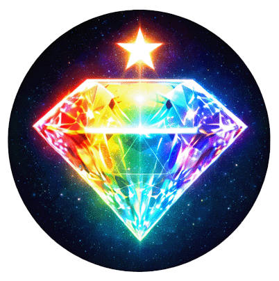
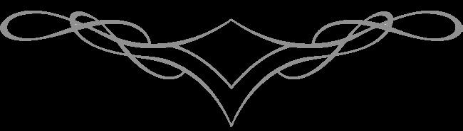